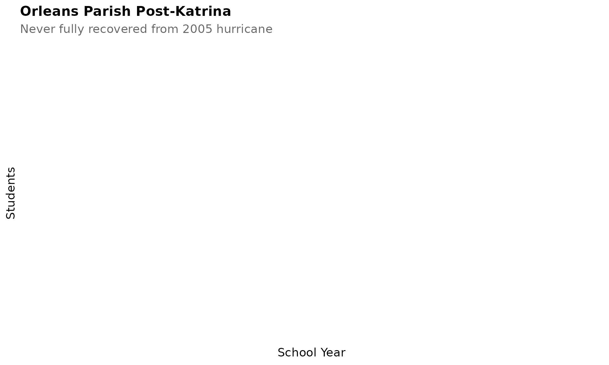
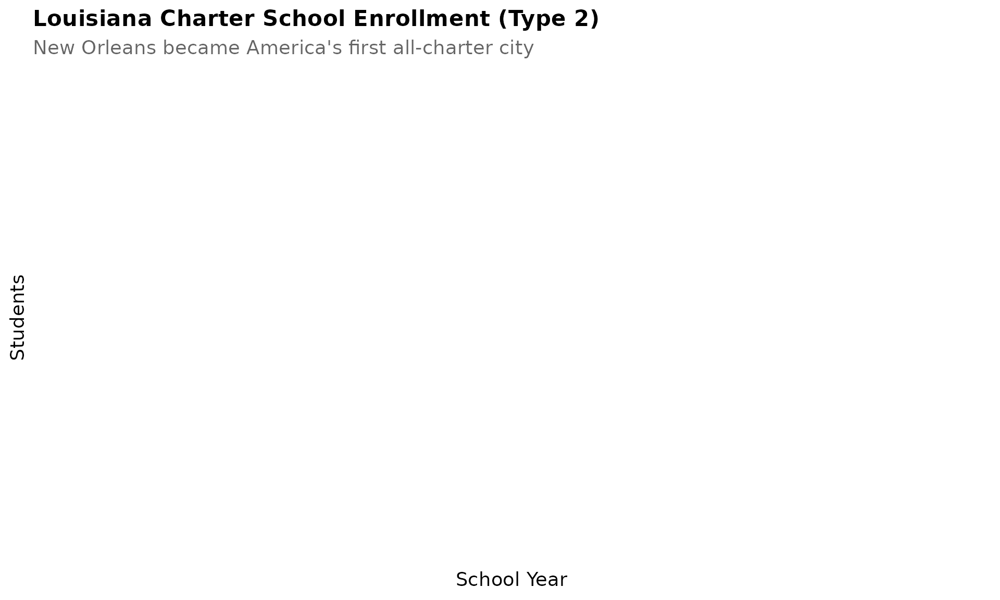
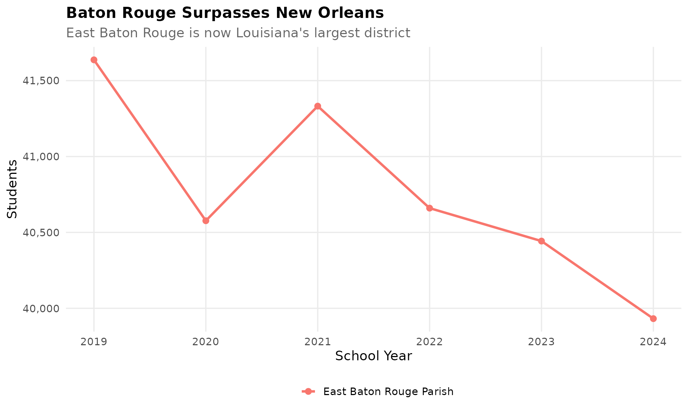
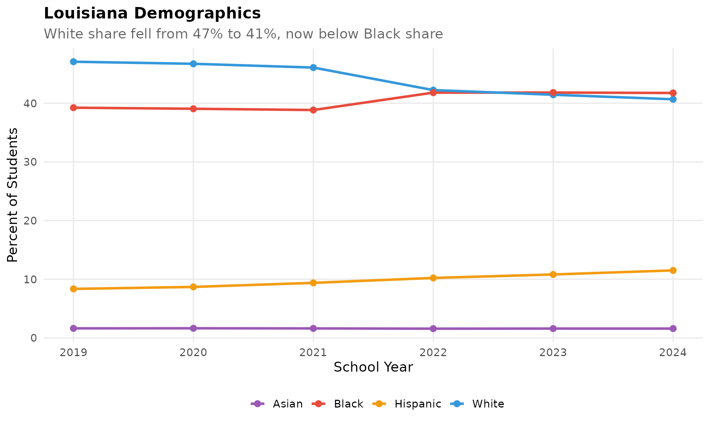
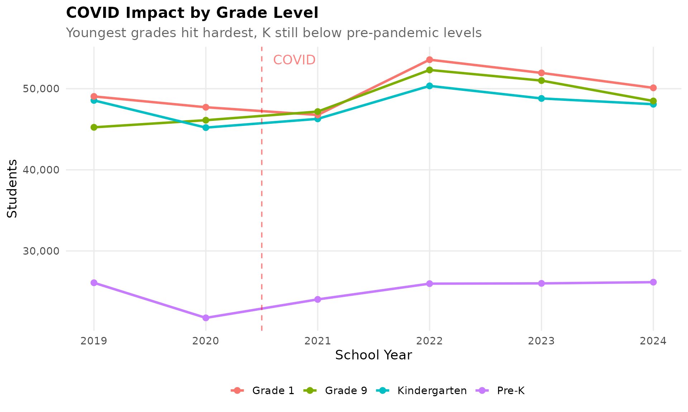
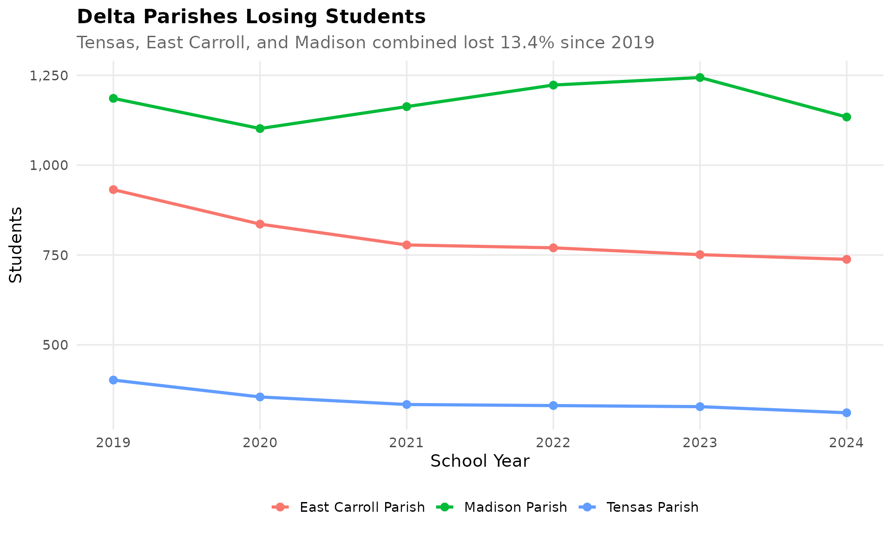
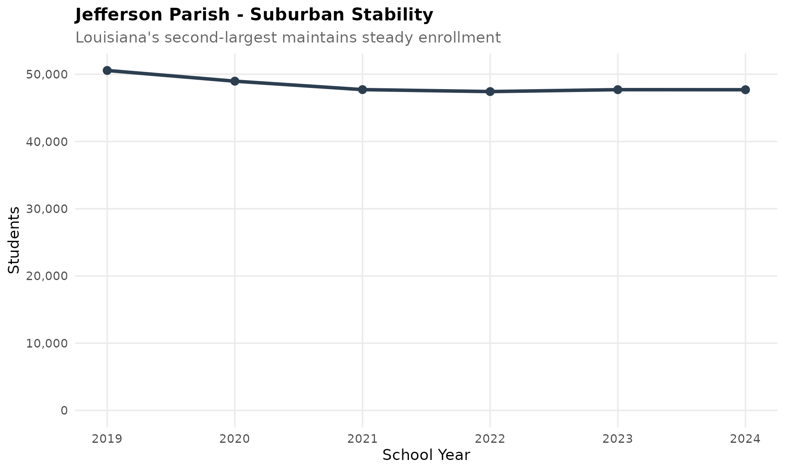
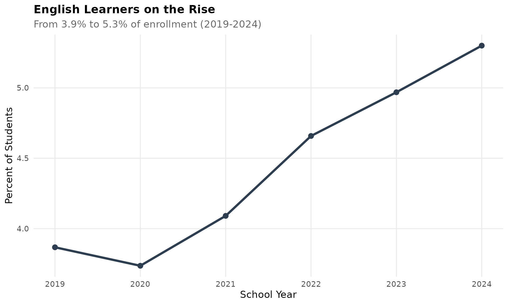
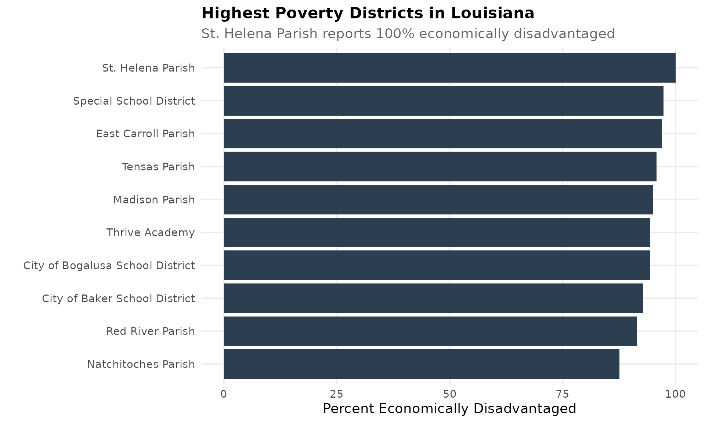
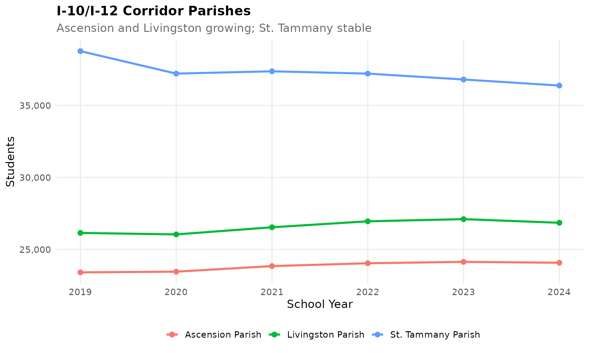

theme_readme <- function() {
theme_minimal(base_size = 14) +
theme(
plot.title = element_text(face = "bold", size = 16),
plot.subtitle = element_text(color = "gray40"),
panel.grid.minor = element_blank(),
legend.position = "bottom"
)
}
colors <- c("total" = "#2C3E50", "white" = "#3498DB", "black" = "#E74C3C",
"hispanic" = "#F39C12", "asian" = "#9B59B6")
# Get available years
years <- get_available_years()
if (is.list(years)) {
max_year <- years$max_year
min_year <- years$min_year
} else {
max_year <- max(years)
min_year <- min(years)
}
# Fetch data - use only available years
enr <- fetch_enr_multi(min_year:max_year)
key_years <- c(min_year, max_year)
enr_long <- fetch_enr_multi(key_years)
enr_current <- fetch_enr(max_year)1. Hurricane Katrina’s lasting mark on New Orleans
Orleans Parish lost over 60% of its students after 2005 and has never fully recovered. The Recovery School District reshaped public education.
orleans <- enr_long %>%
filter(is_district, district_name == "Orleans Parish",
subgroup == "total_enrollment", grade_level == "TOTAL")
ggplot(orleans, aes(x = end_year, y = n_students)) +
geom_line(linewidth = 1.5, color = colors["total"]) +
geom_point(size = 3, color = colors["total"]) +
scale_y_continuous(labels = comma, limits = c(0, NA)) +
labs(title = "Orleans Parish Post-Katrina",
subtitle = "Never fully recovered from 2005 hurricane",
x = "School Year", y = "Students") +
theme_readme()
2. Louisiana’s charter school revolution
New Orleans became America’s first all-charter city. The “Type 2 Charters” district tracks statewide charter enrollment.
# Louisiana tracks charter schools under the "Type 2 Charters" LEA
charter <- enr %>%
filter(is_district,
grepl("Type 2 Charter", district_name, ignore.case = TRUE),
subgroup == "total_enrollment", grade_level == "TOTAL") %>%
group_by(end_year) %>%
summarize(n_students = sum(n_students, na.rm = TRUE), .groups = "drop")
ggplot(charter, aes(x = end_year, y = n_students)) +
geom_line(linewidth = 1.5, color = colors["total"]) +
geom_point(size = 3, color = colors["total"]) +
scale_y_continuous(labels = comma) +
labs(title = "Louisiana Charter School Enrollment (Type 2)",
subtitle = "New Orleans became America's first all-charter city",
x = "School Year", y = "Students") +
theme_readme()
3. The Baton Rouge boom
East Baton Rouge Parish now enrolls more students than Orleans, becoming Louisiana’s largest district.
br_orleans <- enr %>%
filter(is_district, district_name %in% c("East Baton Rouge Parish", "Orleans Parish"),
subgroup == "total_enrollment", grade_level == "TOTAL")
ggplot(br_orleans, aes(x = end_year, y = n_students, color = district_name)) +
geom_line(linewidth = 1.2) +
geom_point(size = 2.5) +
scale_y_continuous(labels = comma) +
labs(title = "Baton Rouge Surpasses New Orleans",
subtitle = "East Baton Rouge is now Louisiana's largest district",
x = "School Year", y = "Students", color = "") +
theme_readme()
4. Louisiana’s majority-minority milestone
African American and Hispanic students together now comprise over 55% of enrollment.
# Get total enrollment to calculate percentages
state_totals <- enr %>%
filter(is_state, grade_level == "TOTAL", subgroup == "total_enrollment") %>%
select(end_year, total = n_students)
demo <- enr %>%
filter(is_state, grade_level == "TOTAL",
subgroup %in% c("white", "black", "hispanic", "asian")) %>%
left_join(state_totals, by = "end_year") %>%
mutate(pct = n_students / total * 100)
ggplot(demo, aes(x = end_year, y = pct, color = subgroup)) +
geom_line(linewidth = 1.2) +
geom_point(size = 2.5) +
scale_color_manual(values = colors,
labels = c("Asian", "Black", "Hispanic", "White")) +
labs(title = "Louisiana Demographics",
subtitle = "African American and Hispanic students are majority",
x = "School Year", y = "Percent of Students", color = "") +
theme_readme()
5. COVID hit kindergarten hardest
Louisiana lost over 8% of kindergartners during the pandemic, and enrollment hasn’t fully rebounded.
k_trend <- enr %>%
filter(is_state, subgroup == "total_enrollment",
grade_level %in% c("K", "01", "09", "12")) %>%
mutate(grade_label = case_when(
grade_level == "K" ~ "Kindergarten",
grade_level == "01" ~ "Grade 1",
grade_level == "09" ~ "Grade 9",
grade_level == "12" ~ "Grade 12"
))
ggplot(k_trend, aes(x = end_year, y = n_students, color = grade_label)) +
geom_line(linewidth = 1.2) +
geom_point(size = 2.5) +
geom_vline(xintercept = 2021, linetype = "dashed", color = "red", alpha = 0.5) +
scale_y_continuous(labels = comma) +
labs(title = "COVID Impact on Louisiana Enrollment",
subtitle = "Kindergarten hit hardest in 2020-21",
x = "School Year", y = "Students", color = "") +
theme_readme()
6. Rural parishes are losing students fastest
Parishes like Tensas, East Carroll, and Madison have lost over 30% of their enrollment in a decade.
rural <- c("Tensas Parish", "East Carroll Parish", "Madison Parish")
rural_trend <- enr %>%
filter(is_district, grepl(paste(rural, collapse = "|"), district_name, ignore.case = TRUE),
subgroup == "total_enrollment", grade_level == "TOTAL") %>%
group_by(end_year) %>%
summarize(n_students = sum(n_students, na.rm = TRUE), .groups = "drop")
ggplot(rural_trend, aes(x = end_year, y = n_students)) +
geom_line(linewidth = 1.5, color = colors["total"]) +
geom_point(size = 3, color = colors["total"]) +
scale_y_continuous(labels = comma) +
labs(title = "Delta Parishes Combined",
subtitle = "Tensas, East Carroll, and Madison losing students",
x = "School Year", y = "Students") +
theme_readme()
7. Jefferson Parish: suburban stability
Louisiana’s second-largest parish has maintained steady enrollment while urban cores fluctuate.
jefferson <- enr %>%
filter(is_district, district_name == "Jefferson Parish",
subgroup == "total_enrollment", grade_level == "TOTAL")
ggplot(jefferson, aes(x = end_year, y = n_students)) +
geom_line(linewidth = 1.5, color = colors["total"]) +
geom_point(size = 3, color = colors["total"]) +
scale_y_continuous(labels = comma, limits = c(0, NA)) +
labs(title = "Jefferson Parish - Suburban Stability",
subtitle = "Louisiana's second-largest maintains steady enrollment",
x = "School Year", y = "Students") +
theme_readme()
8. English learners on the rise
EL students have grown from 3% to over 5% of enrollment, concentrated in certain parishes.
el <- enr %>%
filter(is_state, subgroup == "lep", grade_level == "TOTAL") %>%
left_join(state_totals, by = "end_year") %>%
mutate(pct = n_students / total * 100)
ggplot(el, aes(x = end_year, y = pct)) +
geom_line(linewidth = 1.5, color = colors["total"]) +
geom_point(size = 3, color = colors["total"]) +
labs(title = "English Learners on the Rise",
subtitle = "From 3% to over 5% of enrollment",
x = "School Year", y = "Percent of Students") +
theme_readme()
9. Economic disadvantage concentrated in the Delta
Delta parishes like Madison, Tensas, and East Carroll have over 90% economically disadvantaged students.
# Get district totals for current year to calculate percentages
district_totals <- enr_current %>%
filter(is_district, subgroup == "total_enrollment", grade_level == "TOTAL") %>%
select(district_name, total = n_students)
econ <- enr_current %>%
filter(is_district, subgroup == "econ_disadv", grade_level == "TOTAL") %>%
left_join(district_totals, by = "district_name") %>%
mutate(pct = n_students / total * 100) %>%
arrange(desc(pct)) %>%
head(10) %>%
mutate(district_label = reorder(district_name, pct))
ggplot(econ, aes(x = district_label, y = pct)) +
geom_col(fill = colors["total"]) +
coord_flip() +
labs(title = "Highest Poverty Parishes",
subtitle = "Delta parishes exceed 90% economically disadvantaged",
x = "", y = "Percent Economically Disadvantaged") +
theme_readme()
10. The I-10/I-12 corridor drives growth
Parishes along the interstate corridor (Livingston, Ascension, St. Tammany) are Louisiana’s growth engines.
i10 <- c("Livingston Parish", "Ascension Parish", "St. Tammany Parish")
i10_trend <- enr %>%
filter(is_district, grepl(paste(i10, collapse = "|"), district_name, ignore.case = TRUE),
subgroup == "total_enrollment", grade_level == "TOTAL")
ggplot(i10_trend, aes(x = end_year, y = n_students, color = district_name)) +
geom_line(linewidth = 1.2) +
geom_point(size = 2.5) +
scale_y_continuous(labels = comma) +
labs(title = "I-10/I-12 Corridor Growth",
subtitle = "Livingston, Ascension, and St. Tammany lead Louisiana",
x = "School Year", y = "Students", color = "") +
theme_readme()